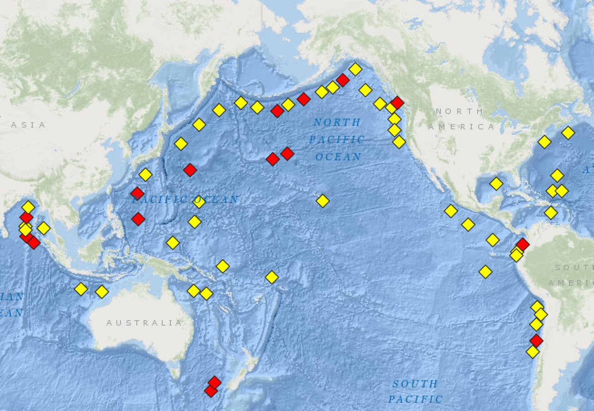
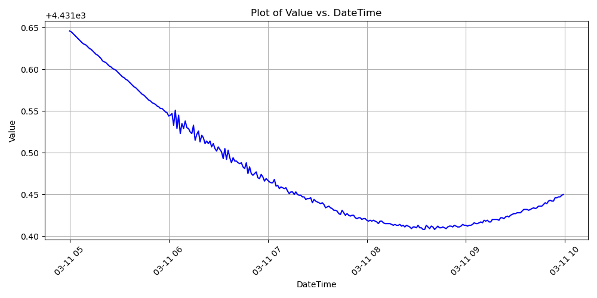

What is the DART network
Bernabe Gomez
The DART (Deep-ocean Assessment and Reporting of Tsunamis) network is a system of buoys and sensors designed to monitor and detect tsunamis in the deep ocean. DART Wesite
Map of DART buoy locations
We choose the station, Station 46404 - WEST ASTORIA
On 11 March 2011, at 14:46 JST (05:46 UTC), a Mw 9.0 to 9.1 Tohoku earthquake
we can look for data in either heights (wave heights, with a sampling period of 45 minutes) or events where the sampling period is 1 minute
The format of the data downloaded is #YY MM DD hh mm ss T HEIGHT
Extracted water level time series
You can find the Jypyter notebook code here CODE